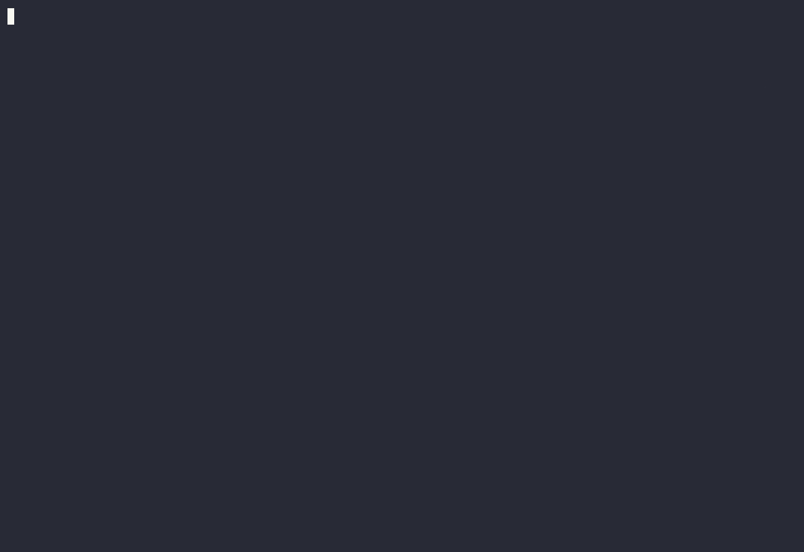

The Modern
Terminal Git UI
A lightweight, keyboard-driven alternative to SourceTree and lazygit. Manage your branches, worktrees, and stashes without leaving the terminal.
curl -fsSL https://raw.githubusercontent.com/tareqmy/gitwig/master/scripts/install.sh | sh

Why Gitwig?
Blazing Fast
Built from the ground up in Rust, ensuring instant responsiveness even in massive repositories with extensive history.
Keyboard Driven
Familiar keystrokes inspired by modern editors. Navigate branches, stages, and commits effortlessly without touching your mouse.
Intuitive UI
A clean, bordered layout presenting branches, worktrees, and stashes at a glance—reminiscent of SourceTree but in the terminal.
Global Code Search
Press Ctrl-F to search for string patterns across all tracked repositories using a fast, multithreaded offline file scanner.
Usage Dashboard
Track your session duration, commit counts, authored lines of code, and view a visual 52-week activity heatmap.
Auto-Refresh
Non-blocking background status checking keeps your repo cards live and up-to-date without freezing the UI.
Crates.io Package Stats
Real-time adoption metrics for gitwig on crates.io